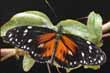
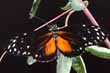
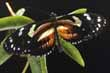
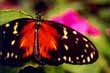
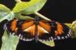
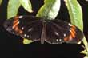
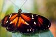

(Click on specimens below to go to higher resolution pictures and explanations)
|  |  |  |  |
|
|
|  |  |  |
|
|
The upper two photos on the left show Heliconius
hecale [Costa Rica] x
atthis
x
atthis F1 hybrids. The third upper photo shows Heliconius (hecale
[Costa Rica]
F1 hybrids. The third upper photo shows Heliconius (hecale
[Costa Rica] x
atthis
x
atthis )
) backcrossed to atthis
backcrossed to atthis .The
three upper pictures on the right show Heliconius (hecale
[Costa Rica]
.The
three upper pictures on the right show Heliconius (hecale
[Costa Rica] x
atthis
x
atthis )
) backcrossed to hecale [Costa Rica]
backcrossed to hecale [Costa Rica] .The
lower pictures show Heliconius (hecale [Costa Rica]
.The
lower pictures show Heliconius (hecale [Costa Rica] x
atthis
x
atthis )
) x melpomene
x melpomene [the
variable melpomene stock had acquired some cydno white forewing
band genes after hybridization about 10 generations previously].
[the
variable melpomene stock had acquired some cydno white forewing
band genes after hybridization about 10 generations previously].